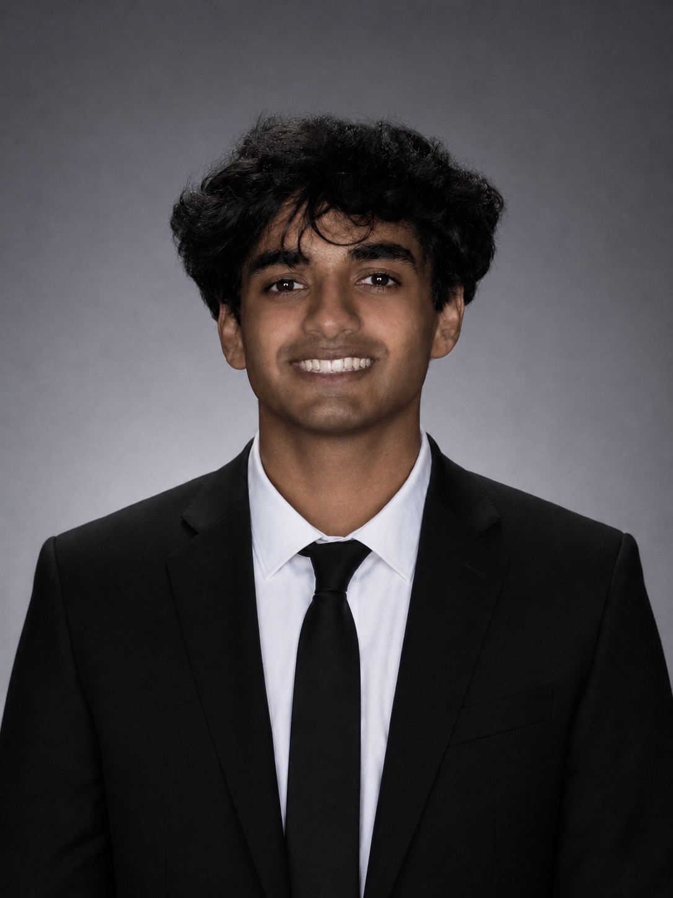
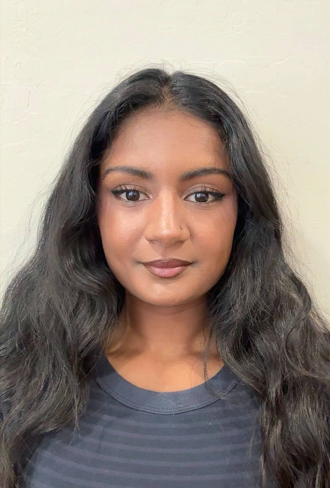
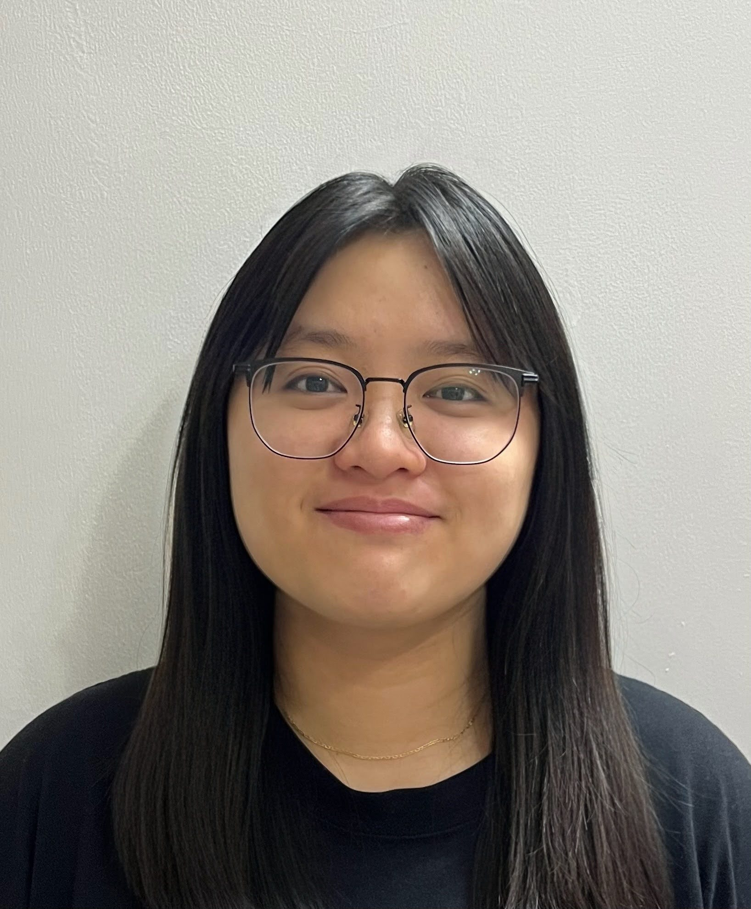

Project Overview
This project examines children's extracurricular participation in the United States through the lens of digital humanities. We are interested in more than just numbers. We want to understand what data about sports, clubs, and lessons can tell us about educational access, family resources, and the structural conditions that shape childhood.
Our central argument is that extracurricular activities are not equally available to all children. Who participates and who does not reflects broader patterns of inequality shaped by income, race, family structure, and geography. By analyzing nationally representative survey data from before and after the COVID-19 pandemic, we trace how those patterns shifted and which inequalities persisted even as overall participation rose.
This site presents our findings through data visualizations, a regional map, a research timeline, and a written narrative. Throughout, we treat the data not as a neutral source of truth but as a constructed artifact shaped by the choices of who was surveyed, what questions were asked, and how activities were categorized.
Sources
Primary Dataset
Our main source is the Survey of Income and Program Participation (SIPP), a nationally representative longitudinal study administered annually by the U.S. Census Bureau. SIPP follows the same households over a four-year period and collects detailed information on income, employment, household structure, demographics, government program participation, and child well-being. The child well-being module, which focuses on children ages 6 to 17, asks parents whether their children participate in sports teams, clubs, lessons, and before or after school programs.
Scholarly Literature
We draw on peer-reviewed research and dissertations to interpret our findings. Key works include Meier et al. (2018) on 27 years of extracurricular inequality trends, Heath et al. (2022) on disadvantaged youth and the compounded benefits of participation, An and Western (2019) on social capital and family structure using an earlier SIPP panel, Covay and Carbonaro (2010) on extracurriculars and academic achievement, and Dunton et al. (2020) on how COVID-19 affected children's organized activity participation. Full citations are available in our Annotated Bibliography.
Presentation
To do: add presentation content.
Team Members

Aaryan
Hello! My name is Aaryan Rustagi and I am a third-year Computer Science major at UCLA. I'm from the Bay and I like playing poker and trying new food. As the web designer, I was responsible for designing and creating our website, and continued to update it with our findings, visuals, and other relevant information throughout the project.

Anjali
Hi, I’m Anjali Chittivelu. I’m a 3rd year Statistics and Data Science major at UCLA. I’m from Las Vegas and I love drawing, listening to music, and cafe hopping. For this project, I helped produce graphs and maps using our data and writing and editing our project narrative.

Felicia
Hello! My name is Felicia and I’m a third-year Cognitive Science major with a specialization in computing at UCLA. I’m from LA and I enjoy playing guitar, watching dramas and cooking. For this project, I helped produce some data visualizations and helped develop key sections of the project narrative, including the significance part.
Josh
Hello! My name is Josh Rusit and I am a third-year Statistics and Data Science major at UCLA. I'm from the Bay Area and enjoy watching all sports and exploring new places and food spots. As the data visualization specialist, I was responsible for cleaning and creating the dataset our group used, as well as producing most of the data visualizations to follow the same theme for our project.
Mahi
Hi I’m Mahi Bandekar, a 3rd year Sociology major at UCLA. I am originally from Irvine and I like to thrift or cook in my free time. For this project, I helped with content writing, source research, and creating the timeline visualization. I worked on writing and editing sections of the website to make the information clear and easy to understand. This project was interesting to work on because it highlighted the importance of extracurricular activities in children’s physical and social development.
Maya
Hello! My name is Maya Gheewala and I am a third-year Public Affairs and Statistics and Data Science double major at UCLA. I am originally from Washington State and love water sports, board games, and baking. As project manager, I was responsible for leading meetings, coordinating division of tasks, and meeting deadlines. I also helped produce some data visualizations as well as the timeline.
Acknowledgements
We would like to thank our DGT HUM 101 teaching team and peers for their guidance throughout this project, including feedback on our research questions, dataset selection, data critique, visualizations, and website design. We also acknowledge the U.S. Census Bureau for making SIPP data publicly available, and the scholars whose work informed our analysis and interpretation. This project was completed as a final project for DGT HUM 101 at UCLA.